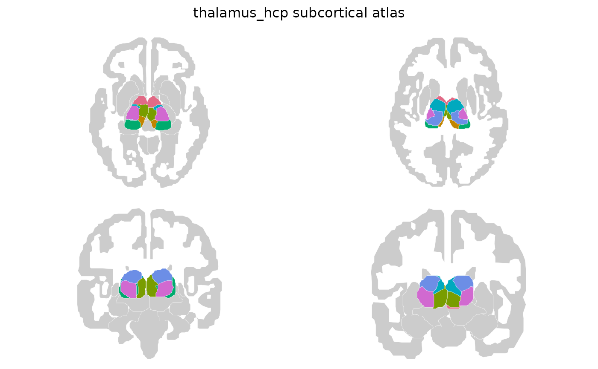

Two published parcellations of the thalamus, from different modalities and
at different granularities. Each is drawn in four views, two coronal and
two axial, with the surrounding brain in grey for anatomical context — the
other deep grey structures included, since these atlases subdivide the
thalamus alone. Both contain 2D polygon geometry for
ggseg::geom_brain() and 3D mesh data for ggseg3d::ggseg3d().
Value
A ggseg.formats::ggseg_atlas object (subcortical).
Details
Labels keep the identifiers the published lookup tables use, and region
is those stripped of the hemisphere suffix and lower-cased, so both are
easy to match on. The name column carries the spelled-out nucleus name
for printing to a reader.
For the FreeSurfer thalamic segmentation see ggsegFreeSurfer::thalamus(),
which is a different atlas again.
Functions
thalamus_hcp(): Seven nuclei groups per hemisphere, clustered from Human Connectome Project diffusion MRI.thalamus_thomas(): Twelve nuclei per hemisphere, segmented from white-matter-nulled MPRAGE by the THOMAS pipeline. Finer than the diffusion-based grouping, and the only one of the two to separate the geniculate nuclei, the habenula and the mammillothalamic tract.
References
Najdenovska E, Aleman-Gomez Y, Battistella G, et al. (2018). In-vivo probabilistic atlas of human thalamic nuclei based on diffusion-weighted magnetic resonance imaging. Scientific Data, 5, 180270. (doi:10.1038/sdata.2018.270 )
Su JH, Thomas FT, Kasoff WS, et al. (2019). Thalamus Optimized Multi Atlas Segmentation (THOMAS): fast, fully automated segmentation of thalamic nuclei from structural MRI. NeuroImage, 194, 272-282. (doi:10.1016/j.neuroimage.2019.03.021 )
Examples
thalamus_hcp()
#>
#> ── thalamus_hcp ggseg atlas ────────────────────────────────────────────────────
#> Type: subcortical
#> Regions: 7
#> Hemispheres: left, right
#> Views: axial_1, axial_2, coronal_1, coronal_2
#> Palette: ✔
#> Rendering: ✔ ggseg
#> ✔ ggseg3d (meshes)
#> ────────────────────────────────────────────────────────────────────────────────
#> hemi region
#> 1 left pulvinar
#> 2 left anterior
#> 3 left medio dorsal
#> 4 left ventral latero dorsal
#> 5 left central lateral lateral posterior medial pulvinar
#> 6 left ventral anterior
#> 7 left ventral latero ventral
#> 8 right pulvinar
#> 9 right anterior
#> 10 right medio dorsal
#> label
#> 1 Pulvinar_Left
#> 2 Anterior_Left
#> 3 Medio_Dorsal_Left
#> 4 Ventral_Latero_Dorsal_Left
#> 5 Central_Lateral-Lateral_Posterior-Medial_Pulvinar_Left
#> 6 Ventral_Anterior_Left
#> 7 Ventral_Latero_Ventral_Left
#> 8 Pulvinar_Right
#> 9 Anterior_Right
#> 10 Medio_Dorsal_Right
#> name
#> 1 Pulvinar
#> 2 Anterior nuclei
#> 3 Mediodorsal nucleus
#> 4 Ventral latero-dorsal nucleus
#> 5 Central lateral, lateral posterior and medial pulvinar nuclei
#> 6 Ventral anterior nucleus
#> 7 Ventral latero-ventral nucleus
#> 8 Pulvinar
#> 9 Anterior nuclei
#> 10 Mediodorsal nucleus
#> ... with 4 more rows
plot(thalamus_hcp())
